N oah Doko rubs absent-mindedly at a scar slashed across his forearm. The former rebel fighter sits amid the crumbling remains of the former Panguna village in Bougainville , beneath the hills that were the hideout and battleground of his youth.
As a teenager, he was shot by the Papua New Guinea defence force: ostensibly by his own military, by a fellow citizen. In the aftermath of the Bougainville civil war, he was elected to parliament to represent veterans.
Now, he contemplates the reanimation of a mine he and his comrades started a war to shut down.
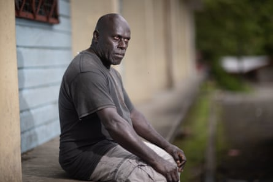Former Bougainville rebel fighter Noah Doko: ‘Panguna mine should be reopened.’Photograph: Mike Bowers/The Guardian
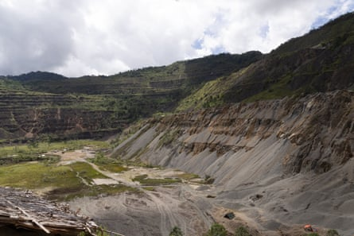The open pit at Panguna now holds hundreds of small alluvial goldmining ventures.Photograph: Mike Bowers/The Guardian
Abandoned three decades ago by owners Rio Tinto , the unremediated Panguna mine remains less a scar carved through the middle of Bougainville than an open wound that has never been allowed to heal.
Beneath the rusting, twisted hulks of the mine’s gargantuan buildings, there are tiny signs of movement: dozens of families, including their children, in the grim, desperate work of digging by hand for flecks of precious metal.
But here, in the depths of this poisoned pit, lies the paradox of Panguna. The reviled foreign project that once tore this island apart, that buried villages under rubble and turned rivers a toxic blue, holds hope today for Bougainville’s unity, prosperity and freedom.
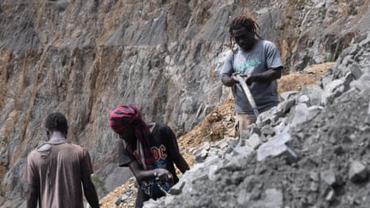Bougainvillians went to war to shut down the Panguna mine. Why do some want it reopened? – video
“Panguna mine should be reopened,” Doko says, pointing towards the vast crater before him. “The economy for running the independent nation of Bougainville is right there.”
He is unworried by the world’s superpowers circling his tiny island. “[Our] independence should be backed up by the wealth, by the resources we have on Bougainville,” he says.
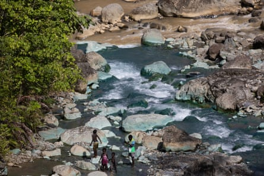Children from Makosi village wade across a river below the abandoned Panguna mine.Photograph: Mike Bowers/The Guardian
Doko might not live to see the day, but he says Bougainville’s independence is irrepressible.
“No one can take it from us … I’m still standing up for it today, to make sure that when I go, I know that my children and my children’s children, they will see independence. They will see prosperity and freedom.”
The quest for independence
The newest nation on Earth has a due date .
“We are now at the final hurdle,” the president of Bougainville, former resistance fighter Ishmael Toroama, told the prime minister of Papua New Guinea earlier this year.
“My people have set 1 September 2027 as the date for independence to take effect.”
Toroama was a lionised Bougainville Revolutionary Army commander – famed for his heroics against the better-equipped PNG military. In the 21st century, few potential heads of state have fired a bow and arrow in combat.
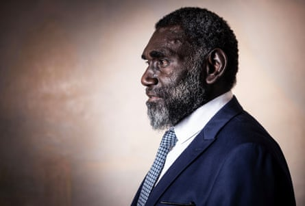The president of Bougainville, Ishmael Toroama, is leading the island towards a planned independence.Photograph: Jessica Hromas/The Guardian
Still less comfortable in a suit than fatigues, Toroama has spent the past two decades recasting himself as peacemaker and negotiator rather than fighter. Over five years as president he has travelled the world, quietly pressing what he calls his people’s demand for independence.
In 2019, Bougainvilleans voted 97.7% in favour of political independence from PNG. But the overwhelming mandate Toroama carries for independence is freighted, too, with pressure to deliver it.
Toroama says the only way an independent Bougainville can be economically sustainable is to reopen the Panguna mine.
“We closed the mine because of oppression: today the mine is the key to our economic growth and settling all unresolved issues from the war,” he told the Guardian.
“For Bougainville, everything now is intertwined: you cannot separate politics from the economy.”
In the minds of the majority on Bougainville, independence and Panguna mine – specifically who owns it and who benefits from it – have been made inseparable by “The Crisis” that seized the island a generation ago.
Opened in 1972, Rio Tinto’s Panguna was once one of the world’s most lucrative copper and goldmines, at one point accounting for 45% of all of PNG’s exports. But less than 1% of its vast profits went to the Bougainville people, and Panguna’s landowners say the mine left them only with political division, violence and environmental degradation.
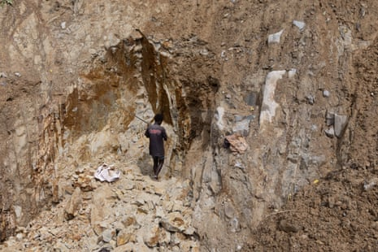The work of alluvial miners is dangerous and dirty, and tailing mountains collapse regularly.Photograph: Mike Bowers/The Guardian
In 1989, amid fomenting community anger at the environmental damage and the inequitable division of the mine’s profits, landowners forced Panguna closed, blowing up its power lines and sabotaging operations.
To restart the foreign-owned mine, the PNG government sent in troops against its own citizens, sparking a decade-long civil war that led to the deaths of as many as 20,000 people – in conflict, but also from starvation and illness – many of them women and children forced to flee to the dense jungles of Bougainville’s mountains.
A peace settlement was brokered in 2001, part of which granted the island a degree of autonomy from Port Moresby and which promised the independence referendum so resoundingly answered.
The slow work of nation-building
Today, independence is everywhere in Bougainville. The rhetoric of “sovereignty” and “freedom” features in everyday conversation. What is less clear is exactly what that independence looks like, and how it could work.
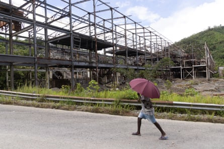A local walks past rusting Bougainville Copper Limited infrastructure near the open-pit mine at Panguna.Photograph: Mike Bowers/The Guardian

Locals sit by the former single men’s quarters at Karona village on the edge of the Panguna mine.Photograph: Mike Bowers/The Guardian
The principle of self-determination has been embedded over generations of having it denied, but the mechanics of nationhood are less clear.
There are pressing, immediate concerns for Bougainville’s autonomous government: in simply keeping the lights on (blackouts are a daily occurrence), in healthcare (on some estimates, just 10 doctors serve an island of more than 300,000 people) and in basic infrastructure (the sole trans-island road is a dusty, rutted track regularly washed away by rain).
The fundamentals of running a country are not yet in place. Bougainville is slowly assuming political powers from Port Moresby: it has established a tax office , courts and other institutions of state. But economic roadmaps and draft constitutions remain that – maps and drafts – and Toroama’s government yearns for broader international recognition and support.
Nation-building is slow work. Presidential elections later this year will be a test, less of candidates’ commitment to independence than of Toroama’s rapid, resolute timeline.
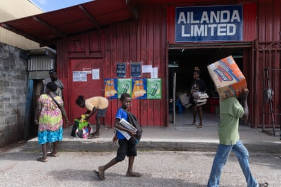Election posters for the upcoming Bougainville presidential election are seen on a shop in Buka.Photograph: Mike Bowers/The Guardian
A senior government official, speaking on condition of anonymity, told the Guardian Bougainville’s independence was “inevitable” but that the 2027 timeline was potentially counter-productive.
“We are nowhere near [ready]. We don’t want to give birth to a state on life support. We want a sovereign nation that is healthy, that is viable.”
PNG’s parliament is seen by many on Bougainville as stalling progress towards independence, refusing to ratify the referendum result. The PNG prime minister, James Marape, says Bougainville is economically unready – it generates only 5% of its own budget , he told parliament – and still has too many guns at large to contemplate independence.
Toroama has conceded “the recent surge of gun-related violence … cannot go unnoticed”. Some former fighters did choose to hide weapons rather than surrender them. But the island’s streets are still far safer than those of Port Moresby.
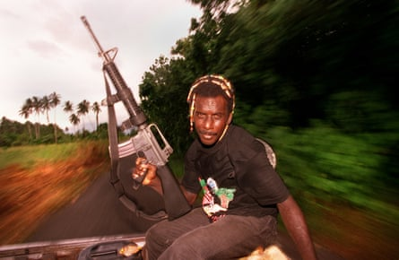Bougainville Revolutionary Army platoon commander Rommy Joel, pictured on 25 April 1997.Photograph: Mike Bowers/The Guardian
Buried treasures
Outsiders have long been Bougainville’s problem.
From the Frenchman who named the island after himself to a succession of colonial masters, foreign domination has built a fiercely independent streak in Bougainville’s politics and identity.
But outside interest in Bougainville - particularly its resources – is undiminished, despite its insurrectionist history. One simple driver is the sheer lucrative potential of the island.
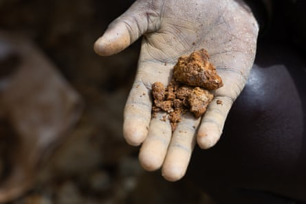More than 19m ounces of gold remains unmined in Panguna.Photograph: Mike Bowers/The Guardian
There remains 5.3m metric tons of copper and more than 19m ounces of gold still unmined in Panguna, worth in excess of $80bn on current prices. Around 5% of the world’s copper reserves, and 1% of its gold, are still buried in what remains of the mountain. And Panguna is not alone: core samples taken from adjacent mountain ranges have returned staggering concentrations of precious metals.
There’s gold (and much else) in these hills – minerals vital to the 21st century economy. Potentially billions to be made.
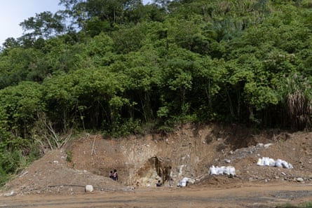The abandoned mine remains a threat to people’s lives – from landslides, levee collapses and floods.Photograph: Mike Bowers/The Guardian
“China and America are going head to head in this place,” a senior Bougainville government official says. “There is competition for Bougainville because people can see the potential here. We have many resources that the world needs.”
There are fears a newly independent Bougainville will emerge as a fragile state, vulnerable to manipulation in a fiercely contested Pacific. Observers have raised concerns that amid America’s withdrawal from global influence, China will seek to establish itself as the dominant development partner, with all of its attendant access.
Already, the state-owned China Railway Construction Group is extending the runway at the sleepy airport at Aropa, just outside Bougainville’s largest city, Arawa. Construction – funded by the Asian Development Bank but branded as the Chinese company’s project – quietly commenced this year.
Bougainville has known destructive foreign interference – Rio Tinto and its former subsidiary Bougainville Copper Limited are still despised for their exploitation and environmental vandalism – but there is no inherent belief here that Chinese investment will necessarily be damaging for the island or the region’s geopolitics.
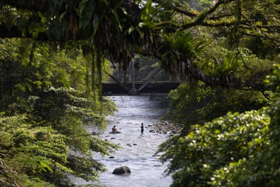Late afternoon in Arawa.Photograph: Mike Bowers/The Guardian
The overwhelming desire here is for development partners that will benefit the island itself rather than exploit its resources for enrichment offshore.
The deputy president and economic development minister, Patrick Nisira, said concerns over Chinese development were fuelled by “western media sources which clouds independent and informed decision-making”. Since Panguna shut, he says, Bougainville’s traditional allies had largely abandoned it.
“The dearth of options from traditional development partners over the last 20 years, a rapidly shortening timeframe for self-governance of Bougainville to 2027, and now Chinese companies’ approaches for partnerships in these very areas, make such opportunities worth considering for the benefit of the people.”
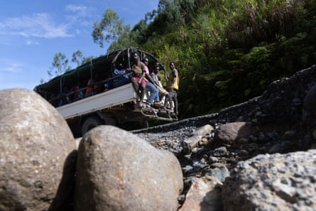The road from Arawa to the Panguna mine is riddled with potholes and has been washed away in places.Photograph: Mike Bowers/The Guardian
In the US, the conservative Heritage Foundation – whose Project 2025 document has guided much of Donald Trump’s agenda – is seized of Bougainville’s geostrategic significance .
“The possibility of an independent Bougainville … provides the US an opportunity to be a proactive, rather than reactive, partner,” its briefing states.
“The US must take advantage of this opportunity, or risk ceding to Beijing a first-mover advantage in a vital corner of the Indo–Pacific, where the balance of power and influence could easily tip in China’s favour.”
But the US’s concern for Bougainville has been inconsistent.
Toroama has previously offered Bougainville as a site for a US base . In 2023, he visited America seeking the chance to press Bougainville’s claim. But a promised meeting with a senior state department official simply never eventuated. After waiting in Washington DC for the phone to ring, he returned to Bougainville chastened, and wary.
The next year Toroama visited Guangzhou: Chinese companies have discussed with him reanimating Panguna, and he says, openly, he is prepared to play “ the Chinese card ”.
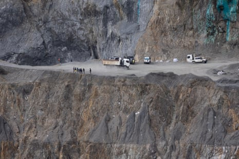Adults and children dig by hand for flecks of precious metal.Photograph: Mike Bowers/The Guardian
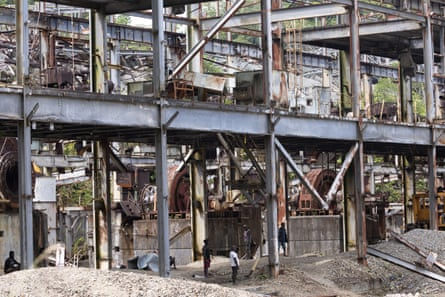Locals walk past decaying infrastructure that belonged to Bougainville Copper Limited, who are still despised for their exploitation and environmental vandalism.Photograph: Mike Bowers/The Guardian
But some in Bougainville are concerned that, in rushing to reopen the mine, the island risks repeating the mistakes of the past.
Theonila Matbob , a parliamentarian whose constituency covers Panguna, argues remediating the mine’s environmental damage must take priority over restarting operations.
“It is the most important, fundamental step that needs to be taken before we talk about extraction. We need to understand how to heal our past first, and then be able to move on. It’s going to take years.”
Matbob’s home sits in the valley where the polluted Jaba River flows. Her father was killed in The Crisis, and she sees her children’s generation suffer still from the mine’s legacy.
Thousands of alluvial miners have set up crude camps in the abandoned pit of Panguna. The work is dangerous and dirty: tailing mountains collapse regularly; some miners use mercury to separate the tiny gold flakes from the silt; children work in the pit daily.
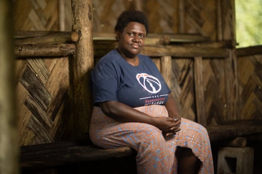Theonila Matbob, a member of the Bougainville parliament for the Ioro constituency, in Makosi village.Photograph: Mike Bowers/The Guardian
They would quit tomorrow, Matbob says, if they had somewhere else to go.
“It is not happening because the basics are not there: food is not there, water is not there, shelter is not there. Where can they easily go into the forest? They’ve got no forest left.
“So every single day they will have to bury themselves amid all these rocks and … the toxins from the soil … killing people. No one cares about that because it’s survival that they’re fighting for.”
Matbob has been a key figure in trying to bring Rio Tinto back to Panguna (the miner has not set foot on the island since 1989) to take responsibility for the mine’s damage through an independent legacy impact assessment .
In December, that assessment reported the abandoned mine remains an acute threat to people’s lives – from landslides, levee collapses and floods. The river delta will stay polluted for a century.
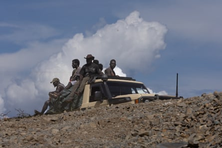The main road is a dusty, rutted track regularly washed away by rain.Photograph: Mike Bowers/The Guardian
Rio Tinto has signed an MOU with the Bougainville government to discuss potential remedy of the Panguna site, but there’s not yet a dollar figure committed. “ We recognise the gravity of the impacts identified and accept the findings,” Rio said in a statement.
‘We want a peaceful way’
Revolution casts a long shadow in Bougainville.
Decades since the end of the conflict, slain fighters are still being exhumed from mass graves and reburied in their villages.
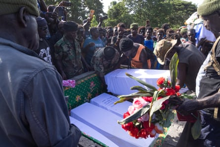On Remembrance Day, veterans reinter the remains of former Bougainville Revolutionary Army soldiers.Photograph: Mike Bowers/The Guardian
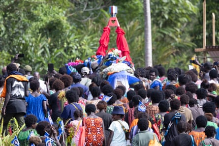Veterans carry the coffins of their fallen colleagues in the village of Sipotovai. Remains were exhumed from a mass grave and placed in a new tomb.Photograph: Mike Bowers/The Guardian
17 May is Remembrance Day, when the island’s war dead are honoured. Much of Bougainville’s young population is too young to have lived through The Crisis, but its pain and privations, and its ideals, are kept alive by the valedictories that carry with them a note of caution.
No one on this island is preaching a return to violence.
Maria Tovivia watches over the bodies of 14 young men in the village of Sipotovai in the island’s north. Thirty-one years after they were killed by members of the PNG defence force, their remains have been exhumed from a mass grave and are being reburied.
Hundreds follow the coffins, each draped in the bright blue flag of Bougainville, up the hill.
The politics of 21st century Bougainville draws a straight line from their deaths a generation ago to the island’s nascent nationhood.
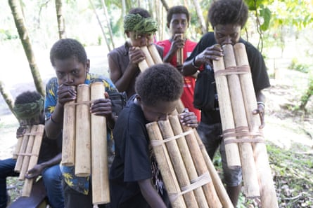Locals play bamboo panpipes as part of Remembrance Day celebrations in Arawa on 17 May.Photograph: Mike Bowers/The Guardian
“The sacrifice by these brave men set the foundation for peace and unity on Bougainville and it set us on our current course to political independence,” president Toroama tells the congregation.
Tovivia believes independence is inevitable. But there will be no fighting. The people of Bougainville have known conflict: they want its opposite, she says.
“We want a peaceful way to independence. No more fighting. No more fighting.”
- This project was supported by a grant from the Melbourne Press Club’s Michael Gordon Fellowships